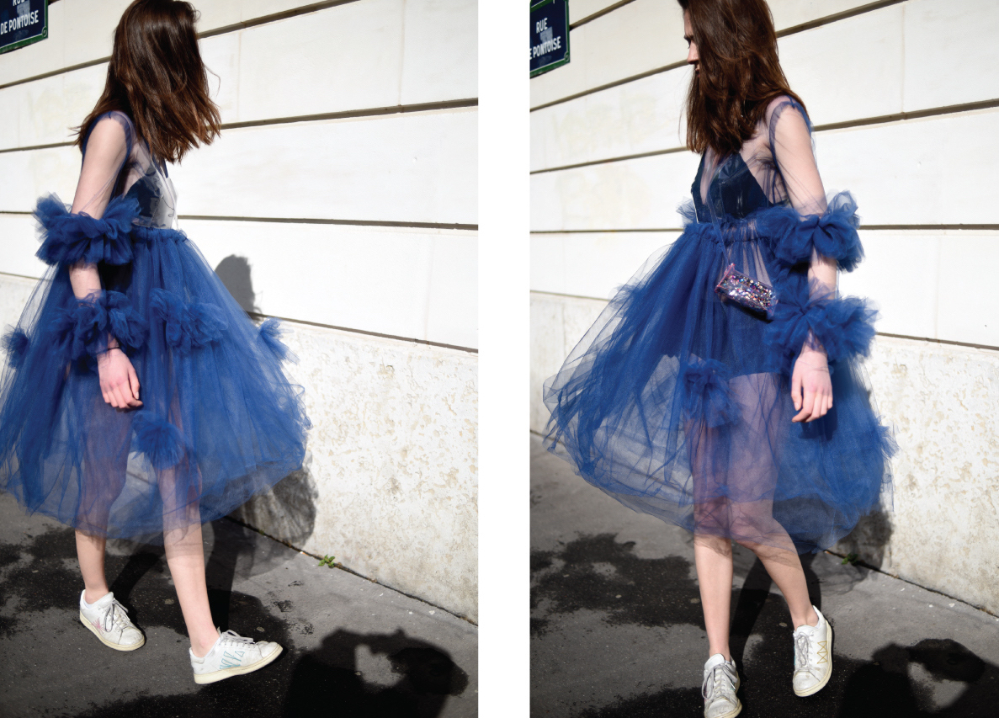
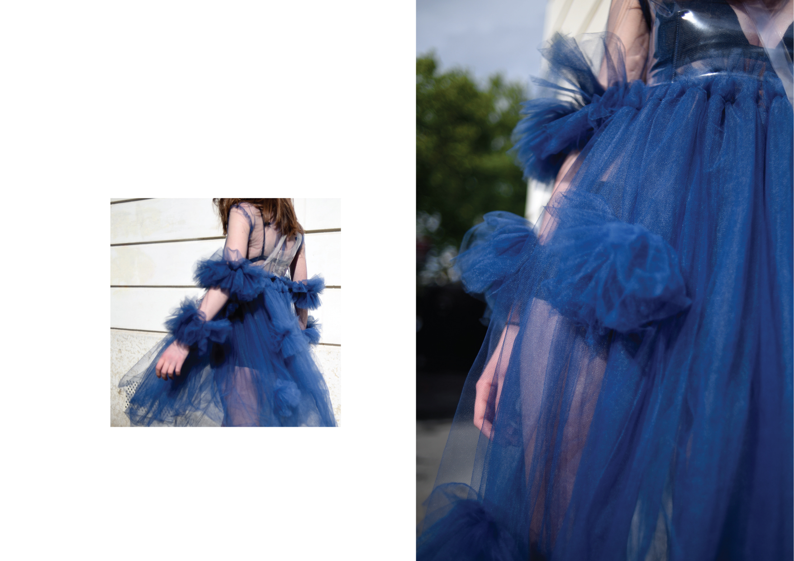
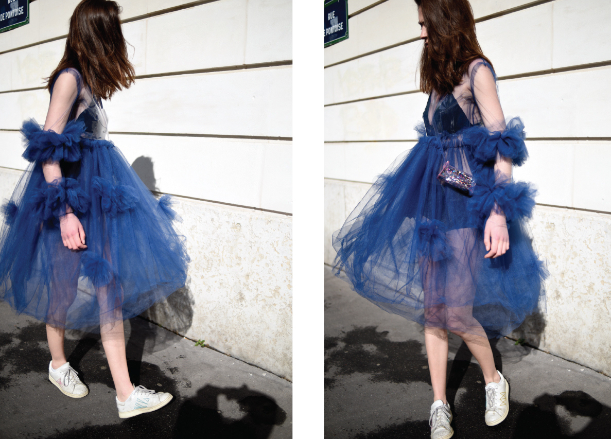
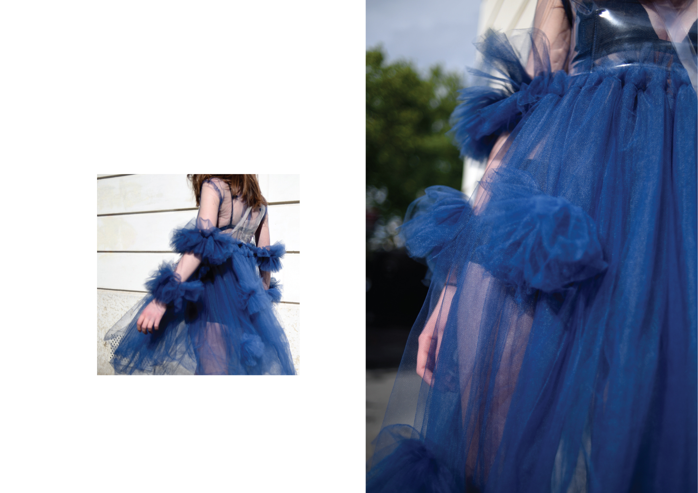

BACK
WEAR WE ARE
JUNIOR YEAR CAPSULE COLLECTION
An important element that affects me, my presence and existence, and my daily life, are my surroundings. We are not only who we are, but where we are. The way Paris is built as well as the lifestyle, such as the café culture, has been associated with Paris causing a slower pace mentality. During my research process of this project I analysed many aspects of Paris that contribute to the way we exist within it. The city is filled with modern and old architecture that sometimes work better than other times, which I used as inspiration for the materiality of the collection. As inhabitants of Paris we face many constraints: sidewalks that are supposed to be used for getting around are not very effective, opening hours of stores are limited and vary depending on the mood of the owner and many things take five times the amount of time that they “should.” So what happens when the function of things are reversed, when their purpose does not correspond with what they are actually set out to do? My collection explores constraints, as well as reversed purpose and functionality, in both the design of the garments and the materiality. All of the elements that we are constantly surrounded by affect our pace in the world. The way we dress affects our interaction with the city and the pace that we choose to, or are forced to, live in. My project also explores the idea of how we dress: how the volume, shape and colour, affects our interaction with the world and other people. I have been inspired by how we dress according to the pace we want to live in everyday and how we find comfort or discomfort in garments that do or do not fulfil their “usual” purpose. The more time we spend in a place, the more we subconsciously adapt to it. This collection is the result of my analysis of my subconscious adaptation.
 


